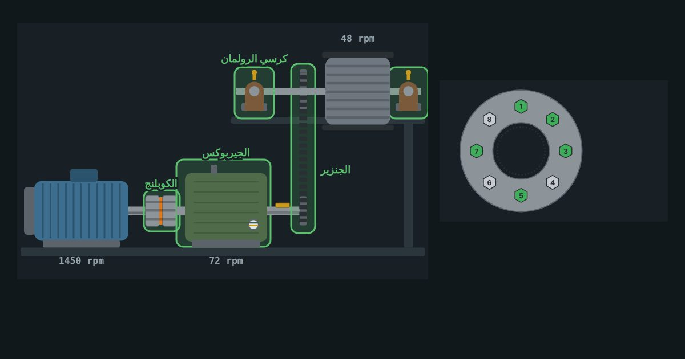

كورس · 15 درس · 15 تمرين ورشةعملي للصيانة
كورس ميكانيكا المكن العملية
اللي الفني بيعمله بإيده في الصيانة الميكانيكية. كل فكرة في سطر وصورة، وفي كل درس تمرين على مكنة حقيقية: تربط فلانشة بترتيب النجمة، تشيّم موتور لحد ما المحاذاة تتظبط، تركّب رولمان بالسخان، تشد سير، وتشحّم بالكمية المحسوبة.
الدرس الأول مفتوح للكل

المحتوى
15 درس بالترتيب، وفي كل درس تمرين ورشة
كل درس فكرة في سطر وصورة تفهمها من نظرة، وبعدها تمرين من 3 جولات وأسئلة قصيرة. الدرس الأخير تشخيص أعطال وامتحان نهائي.
- المكنة من جوّه: خط نقل الحركةمفتوح للكل
- من الموتور للحمل
- كل جزء وشغلته
- السرعة بتقل… العزم بيزيد
- 4 حاجات بتبوّظ أي مكنة
- تمرينالسير الناقل: اعرف كل جزء
- أسئلةأسئلة الدرس
- المسامير والصواميل
- اقرا المقاس: M12 × 1.75
- القوة: الرقم اللي على الراس
- المفتاح المظبوط
- إزاي المسمار ما يفكّش؟
- تمريناختار المسمار والمفتاح
- أسئلةأسئلة الدرس
- عزم الربط وترتيب الربط
- ليه العزم مهم؟
- جدول العزم (حديد 8.8، سن ناشف)
- مفتاح العزم
- ترتيب النجمة وعلى مراحل
- تمرينفلانشة 8 مسامير
- أسئلةأسئلة الدرس
- الخوابير والجلب والتثبيت على العمود
- حاجتين وكل واحدة ليها حل
- مقاس الخابور من قطر العمود
- جلبة التيبر لوك
- التثبيت من الزحف
- تمرينركّب البكرة على العمود
- أسئلةأسئلة الدرس
- الكوبلنجات
- جامد ولا مرن؟
- الأنواع اللي هتقابلها
- اختار على أساس إيه؟
- علامات الكوبلنج التعبان
- تمريناختار الكوبلنج المناسب
- أسئلةأسئلة الدرس
- محاذاة الأعمدة (Alignment)
- نوعين غلط
- بتقيس بإيه؟
- قبل ما تبدأ: الرجل الطايرة
- الحدود المقبولة (حوالي 1500 rpm)
- تمرينمحاذاة موتور على جيربوكس
- أسئلةأسئلة الدرس
- الرولمان بلي: الأنواع والأرقام
- الأنواع وشغلة كل واحد
- فك شفرة 6205-2RS C3
- الحروف اللي بعد الرقم
- تمرينفك شفرة رقم الرولمان
- أسئلةأسئلة الدرس
- فك وتركيب الرولمان
- القاعدة الذهبية
- التركيب بالسخان
- الفك
- أخطاء بتموّته بدري
- تمرينرتّب خطوات الشغل
- أسئلةأسئلة الدرس
- الأورنج والسيل: منع التسريب
- الأورنج: مقاسين بس
- الخامة على حسب السايل والحرارة
- السيل (مانع التسريب): الشفّة ناحية الزيت
- التركيب من غير ما يتجرح
- تمريناختار الخامة وركّب السيل
- أسئلةأسئلة الدرس
- التروس وأنواعها ونسبة التخفيض
- الأنواع
- النسبة من الأسنان
- الموديول: لازم يتطابق
- الدودة: النسبة الكبيرة والقفل
- تمرينترسين على عمودين
- أسئلةأسئلة الدرس
- الجيربوكس: الاختيار والزيت
- لوحة البيانات
- معامل الخدمة
- الزيت
- الكشف اليومي
- تمريناختار الجيربوكس وراقب زيته
- أسئلةأسئلة الدرس
- السيور والبكر
- مقاسات سيور V
- النسبة من الأقطار
- الشد بالترخيم
- التركيب والمحاذاة
- تمرينشد السير بالترخيم
- أسئلةأسئلة الدرس
- الجنازير والسبروكت
- الخطوة (Pitch)
- الوصلات
- الرخاوة والاستطالة
- التزييت
- تمرينقيس الجنزير وقرّر
- أسئلةأسئلة الدرس
- التشحيم والتزييت
- شحم ولا زيت؟
- الأرقام اللي على العلبة
- الكمية الصح
- إزاي تشحّم صح
- تمرينمسدس الشحم
- أسئلةأسئلة الدرس
- تشخيص الأعطال + الامتحان النهائي
- أدواتك
- العلامة ← السبب
- الحرارة
- خطة الكشف
- تمرينشخّص المكنة العطلانة
- أسئلةأسئلة الدرس
- أسئلةالامتحان النهائي (20 سؤال)
الكورس بالأرقام
15درس من المسمار لحد تشخيص الأعطال
15تمرين ورشة، كل واحد 3 جولات
110سؤال في الدروس والامتحان النهائي
80%للنجاح وشهادة إتمام
الصيانة الميكانيكية
هتتعلّم إيه
- تقرا مقاس المسمار ودرجته وتربط بالعزم الصح وبترتيب النجمة
- تختار الخابور والكوبلنج المناسب وتعمل محاذاة بالشيمز وتصلّح الرجل الطايرة
- تقرا رقم الرولمان وتركّبه بالسخان من غير ما يتعلّم، وتختار الأورنج والسيل الصح
- تحسب نسبة التروس وتختار الجيربوكس بمعامل الخدمة وتراقب زيته
- تشد السير بالترخيم وتقيس استطالة الجنزير، وتشحّم بالكمية المحسوبة
- تعرف العطل من الصوت والحرارة والاهتزاز والتسريب
لمين
الكورس ده لمين
- لفنيين الصيانة الكهربا اللي بيشتغلوا جنب الميكانيكي وعايزين يفهموا شغله
- للمبتدئ في الصيانة الميكانيكية في المصانع
- لطلبة الدبلومات الفنية والهندسة كتمهيد عملي
- عايز الفيزيا اللي ورا العزم والتروس؟ كورس أساسيات الميكانيكا بيكمّله
أسئلة متكررة
قبل ما تسأل
محتاج خبرة قبل الكورس؟
لا. الكورس بيبدأ من أجزاء المكنة نفسها، وكل رقم بيجي ومعاه مثال.
التمارين بتشتغل على الموبايل؟
أيوه. كل التمارين بالضغط والسلايدر، ومعمولة للموبايل الأول.
الأرقام دي أستخدمها في الشغل على طول؟
الأرقام مقرّبة للتعلّم وبتديك الإحساس الصح. في الشغل الحقيقي ارجع دايمًا لكتالوج المصنّع.
فيه شهادة؟
أيوه، شهادة إتمام لما تخلّص كل الدروس وتنجح في الامتحان النهائي.
جاهز تربط أول فلانشة؟
الدرس الأول مفتوح للكل، والكورس كله بيتفتح لما تشتريه. تقدّمك محفوظ.